Ключевое слово this в Java
Ключевое слово this требуется для того, чтобы метод мог сослаться на вызвавший его объект.
На этом, собственно можно было бы и закончить. Но нам нужна конкретика.
Как правило, применять this нужно в двух случаях:
• Когда у переменной экземпляра класса и переменной метода/конструктора одинаковые имена;
• Когда нужно вызвать конструктор одного типа (например, конструктор по умолчанию или параметризированный)
из
другого. Это еще называется явным вызовом конструктора.
Вот и все, на самом деле не так много, — всего два случая, когда применяется это страшное ключевое слово.
Теперь давайте рассмотрим эти две ситуации на примерах.
Пример первый — у переменной экземпляра и метода одинаковые имена.
Допустим, у нас есть класс Human, для которого определено поле «имя»:
 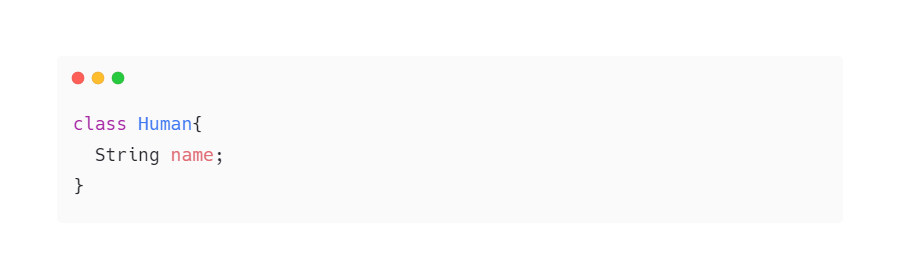
Давайте для переменной name создадим сеттер (setter вполне рабочий и никакого подвоха здесь нет):
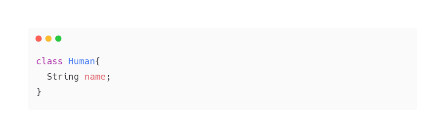
Давайте для переменной name создадим сеттер (setter вполне рабочий и никакого подвоха здесь нет):
 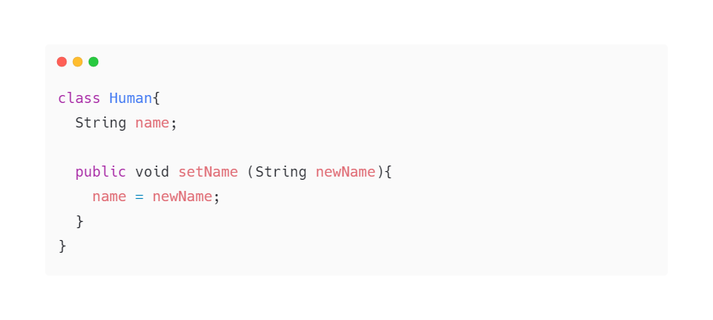
Обратите внимание, что в метод (сеттер) "setName" мы передаем переменную "String newName". Мы ввели новую
переменную и (в общем-то) могли назвать ее как угодно ведь она будет видна только в пределах {фигурных
скобок} метода "setName". Обратите внимание, что в сеттере есть одна строка:
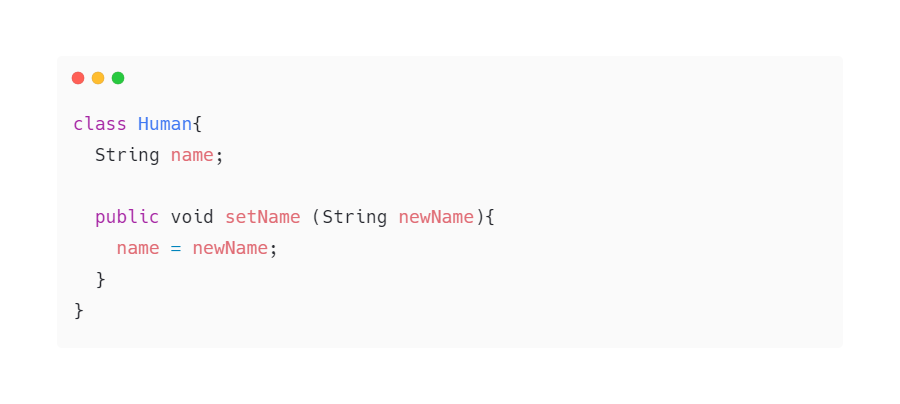
Обратите внимание, что в метод (сеттер) "setName" мы передаем переменную "String newName". Мы ввели новую
переменную и (в общем-то) могли назвать ее как угодно ведь она будет видна только в пределах {фигурных
скобок} метода "setName". Обратите внимание, что в сеттере есть одна строка:
 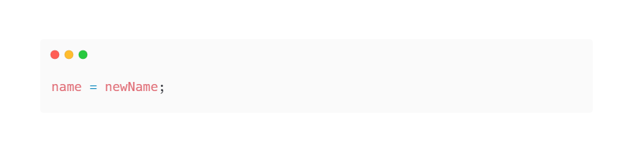
То есть по факту мы ввели новую переменную newName и присвоили ее уже существующей в классе переменной name.
Многим программистом казалось это странным, — вводить переменную с новым именем, если в итоге речь идет об
одном и том же. Об имени в классе Human. Поэтому, разработчики языка задумались о том, чтобы удобно сделать
использование одного имени переменной. Другими словами, зачем иметь два имени для переменной, обозначающей
одно и то же. То есть хотелось бы сделать как-то так:
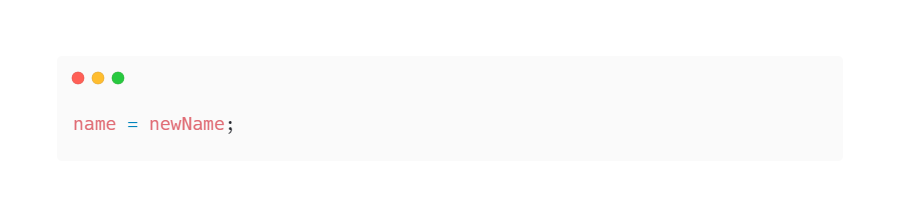
То есть по факту мы ввели новую переменную newName и присвоили ее уже существующей в классе переменной name.
Многим программистом казалось это странным, — вводить переменную с новым именем, если в итоге речь идет об
одном и том же. Об имени в классе Human. Поэтому, разработчики языка задумались о том, чтобы удобно сделать
использование одного имени переменной. Другими словами, зачем иметь два имени для переменной, обозначающей
одно и то же. То есть хотелось бы сделать как-то так:
 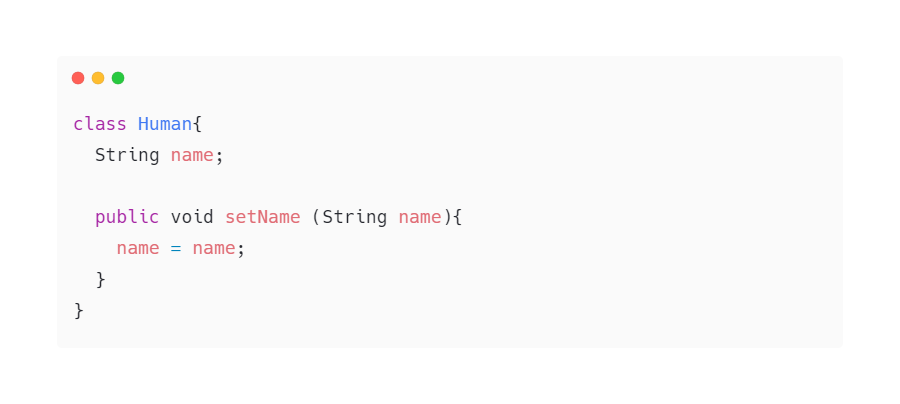
Но в этом случае возникает проблема. У нас теперь две переменные, которые называются одинаково. Один String
name принадлежит классу Human, а другой String name его методу setName. Поэтому Java – машина не знает,
какую переменную вы имеете ввиду, когда пишете строку в сеттере:
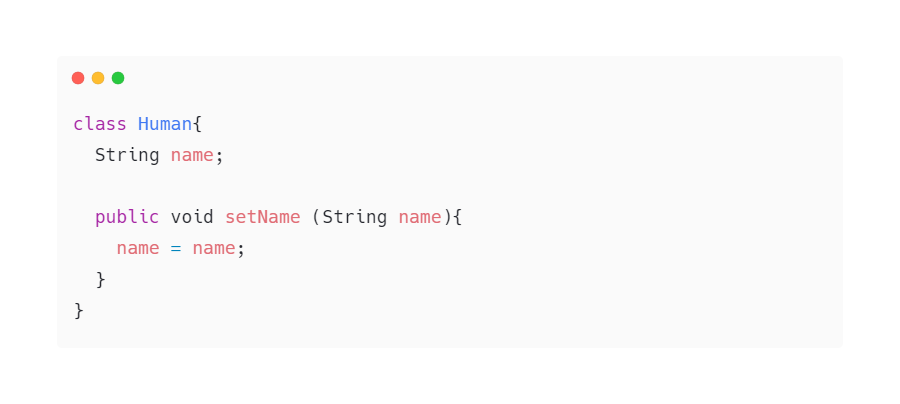
Но в этом случае возникает проблема. У нас теперь две переменные, которые называются одинаково. Один String
name принадлежит классу Human, а другой String name его методу setName. Поэтому Java – машина не знает,
какую переменную вы имеете ввиду, когда пишете строку в сеттере:
 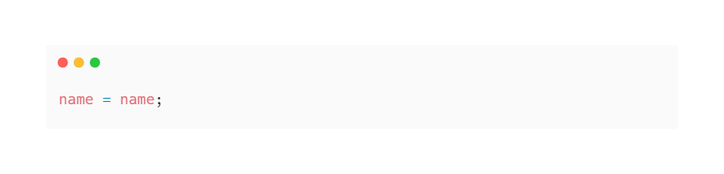
Java берет самую близкую – name из метода setName:
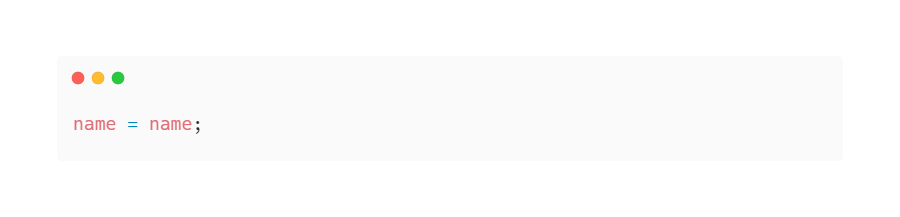
Java берет самую близкую – name из метода setName:
 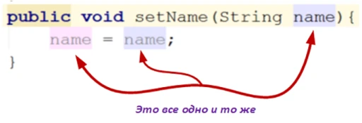
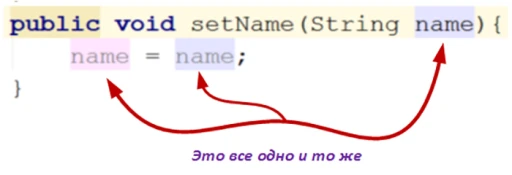
и получается, что вы просто присваиваете значение переменной name из этого метода, ей же. Что конечно не
имеет никакого смысла. Поэтому нужен был какой-то способ, чтобы отличить переменную name из класса Human, от
переменной name из метода setName.Для решения этой проблемы и было введено ключевое слово this, которое в
данном случае укажет, что нужно вызывать переменную не метода, а класса Human:
 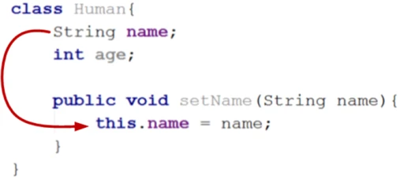
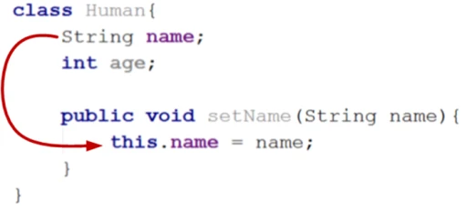
То есть this сошлется на вызвавший объект, как было сказано в начале статьи. В результате чего имя человека
через сеттер setName будет установлено создаваемому объекту. Ниже приведен программный код без использования
ключевого слова this. В коде создается объект класса Human и присваивается ему имя:
 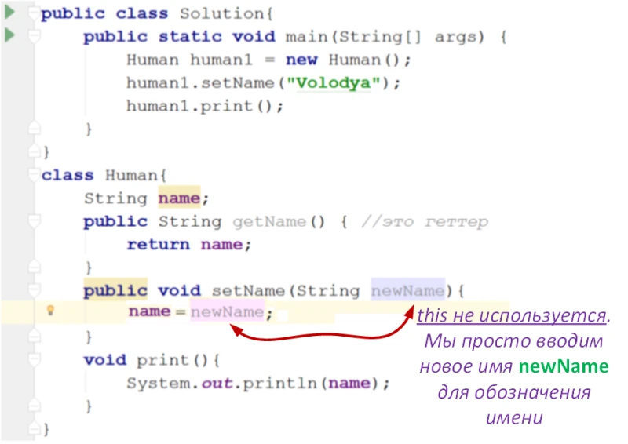
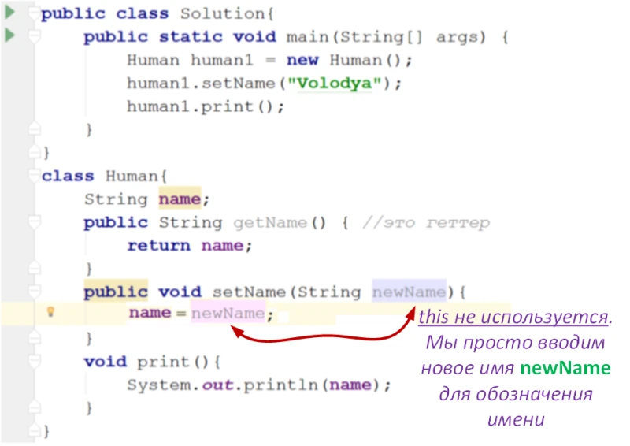
Таким образом, здесь this позволяет не вводить новые переменные для обозначения одного и того же, что
позволяет сделать код менее «перегруженным» дополнительными переменными.
Пример второй — Применение this для явного вызова конструктора.
Вызов одного конструктора из другого может пригодиться тогда, когда у вас (как ни странно) несколько
конструкторов и вам не хочется в новом конструкторе переписывать код инициализации, приведенный в
конструкторе ранее. Запутал? Все не так страшно как кажется. Посмотрите на код ниже, в нем два конструктора
класса Human:
 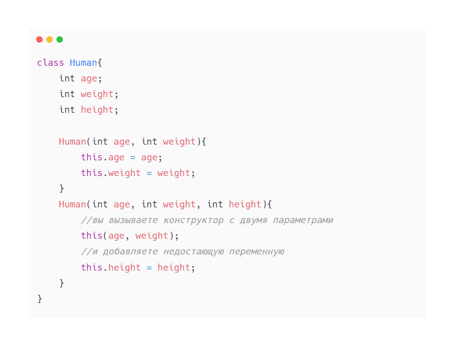
Здесь у нас сначала приводится конструктор с двумя параметрами, который принимает int age и int weight.
Допустим, мы написали в нем две строчки кода:
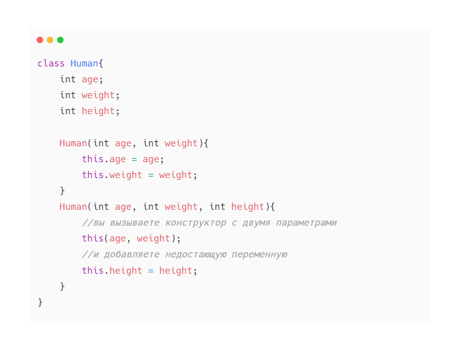
Здесь у нас сначала приводится конструктор с двумя параметрами, который принимает int age и int weight.
Допустим, мы написали в нем две строчки кода:
 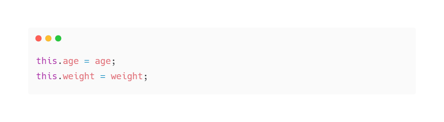
а потом решили добавить еще один конструктор, с тремя параметрами, который помимо возраста и веса принимает
еще и рост. В новом конструкторе вы бы могли написать так:
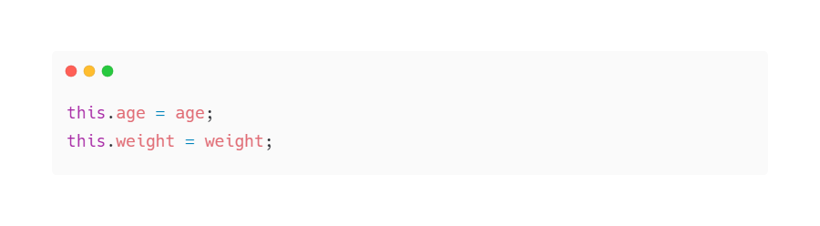
а потом решили добавить еще один конструктор, с тремя параметрами, который помимо возраста и веса принимает
еще и рост. В новом конструкторе вы бы могли написать так:
 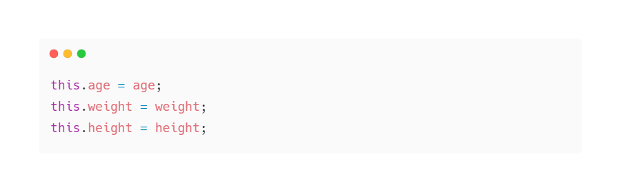
Но вместо того, чтобы повторять уже написанный ранее код в этом конструкторе, вы можете с помощью ключевого
слова this явно вызвать конструктор с двумя параметрами:
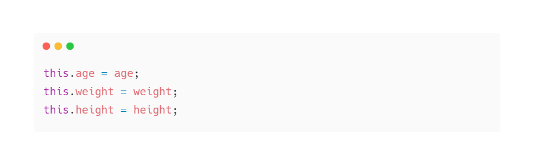
Но вместо того, чтобы повторять уже написанный ранее код в этом конструкторе, вы можете с помощью ключевого
слова this явно вызвать конструктор с двумя параметрами:
 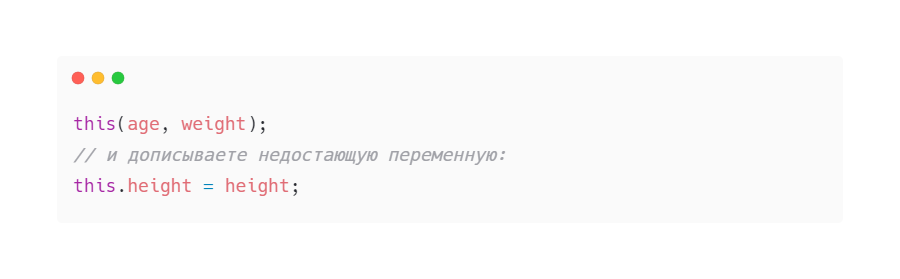
Таким образом, вы как-бы говорите конструктору с тремя параметрами:
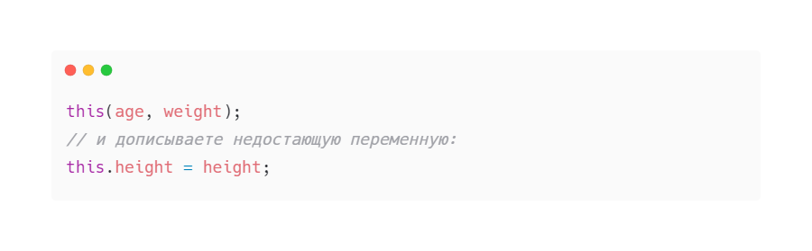
Таким образом, вы как-бы говорите конструктору с тремя параметрами:
• вызови this (этот) конструктор, который имеет два параметра.
• и добавить недостающую переменную.
Вот и все =). Напоследок отметим, что ключевое слово this в Java используется только в составе методов либо
конструкторов экземпляра класса. Но неявно ключевое слово this передается во все методы, кроме статических
(поэтому this часто называют неявным параметром) и может быть использовано для обращения к объекту,
вызвавшему метод. Бояться этого ключевого слова не нужно, потому что This не страшно.